📝 Cadastro e Login no OrbitSender
Tutorial completo passo a passo para criar sua conta e fazer login
📚 Páginas Relacionadas
Introdução
Bem-vindo ao OrbitSender! Este tutorial vai te guiar através de todo o processo de cadastro, desde a entrada na fila de espera até a finalização do registro.
Devido à alta demanda, atualmente o acesso à plataforma está controlado através de uma fila de espera. Após finalizar o cadastro, você precisará entrar em contato com o suporte para solicitar a liberação da sua conta.
Passo 1: Acessar a página de registro
Para começar o cadastro, siga estes passos:
- Acesse o link de registro:
https://app.orbitsender.com/register - Você verá a tela inicial com informações sobre a fila de espera
- Leia as informações apresentadas
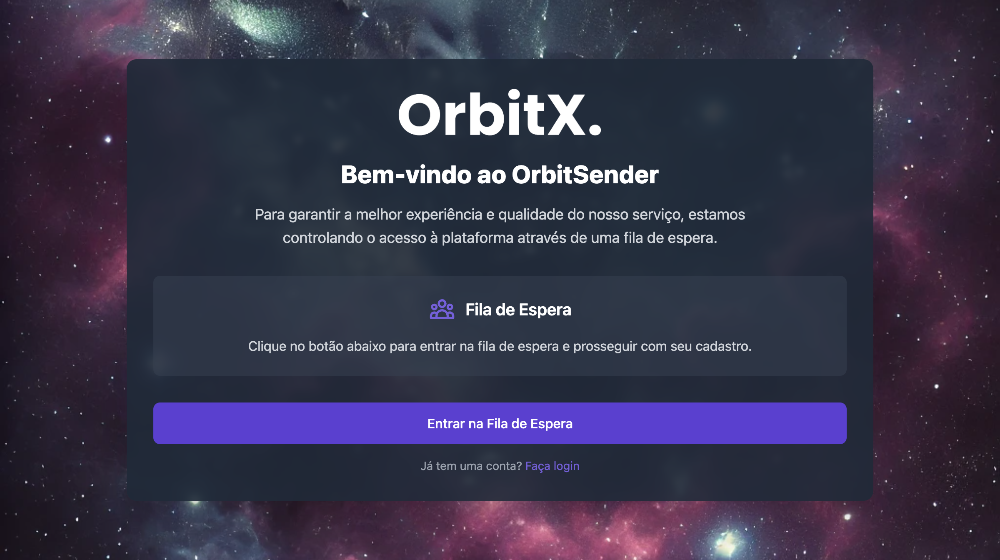
- Mensagem de boas-vindas do OrbitSender
- Informação sobre a fila de espera
- Botão "Entrar na Fila de Espera"
- Link para fazer login (se já tiver conta)
Passo 2: Entrar na fila de espera
Clique no botão "Entrar na Fila de Espera" para prosseguir com o cadastro.
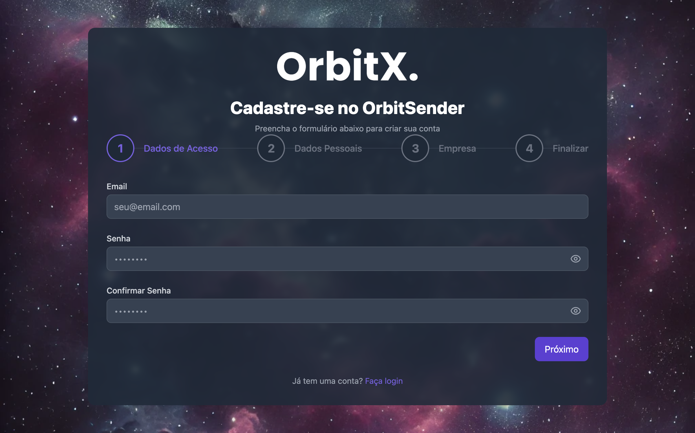
Este sistema foi implementado para garantir a melhor experiência e qualidade do serviço. Após o cadastro, você precisará entrar em contato com o suporte pelo WhatsApp para solicitar a liberação da sua conta.
Passo 3: Etapa 1 - Dados de Acesso
O cadastro é dividido em 4 etapas. Vamos começar pela primeira: Dados de Acesso.
3.1 Preenchendo o Email
- No campo "Email", digite um email válido que você tenha acesso
- Exemplo:
tutorial@orbitsender.com - Certifique-se de que o email está correto, pois você receberá confirmações nele
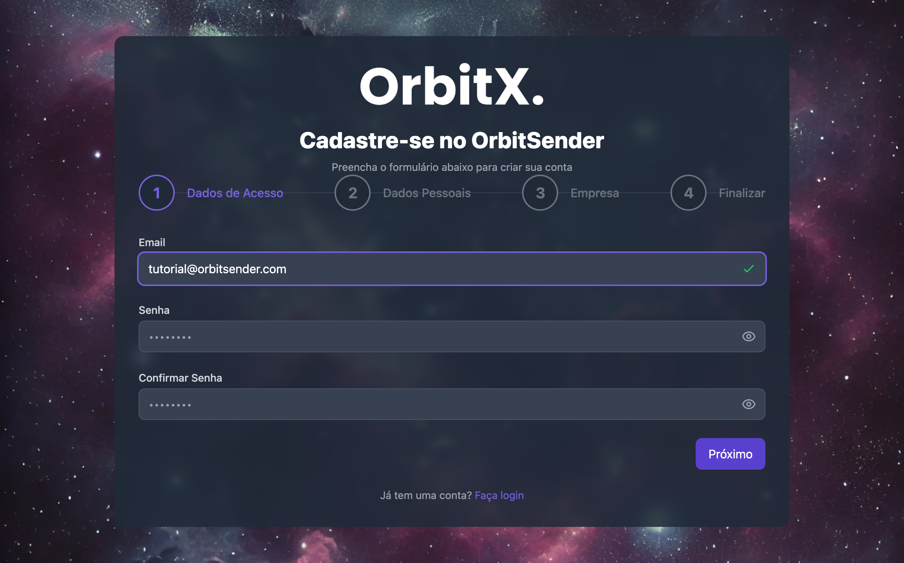
3.2 Criando uma Senha Segura
A senha deve atender aos seguintes requisitos de segurança:
- ✓ Pelo menos 8 caracteres
- ✓ Pelo menos uma letra maiúscula
- ✓ Pelo menos uma letra minúscula
- ✓ Pelo menos um número
- ✓ Pelo menos um caractere especial (!@#$%^&*)
Tutorial2024!OrbitX
Esta senha atende todos os requisitos:
- ✓ Tem mais de 8 caracteres
- ✓ Tem letras maiúsculas (T, O, X)
- ✓ Tem letras minúsculas (utorial, rbit)
- ✓ Tem números (2024)
- ✓ Tem caractere especial (!)
3.3 Confirmando a Senha
- No campo "Confirmar Senha", digite exatamente a mesma senha
- As duas senhas devem ser idênticas
- O sistema validará automaticamente se as senhas coincidem
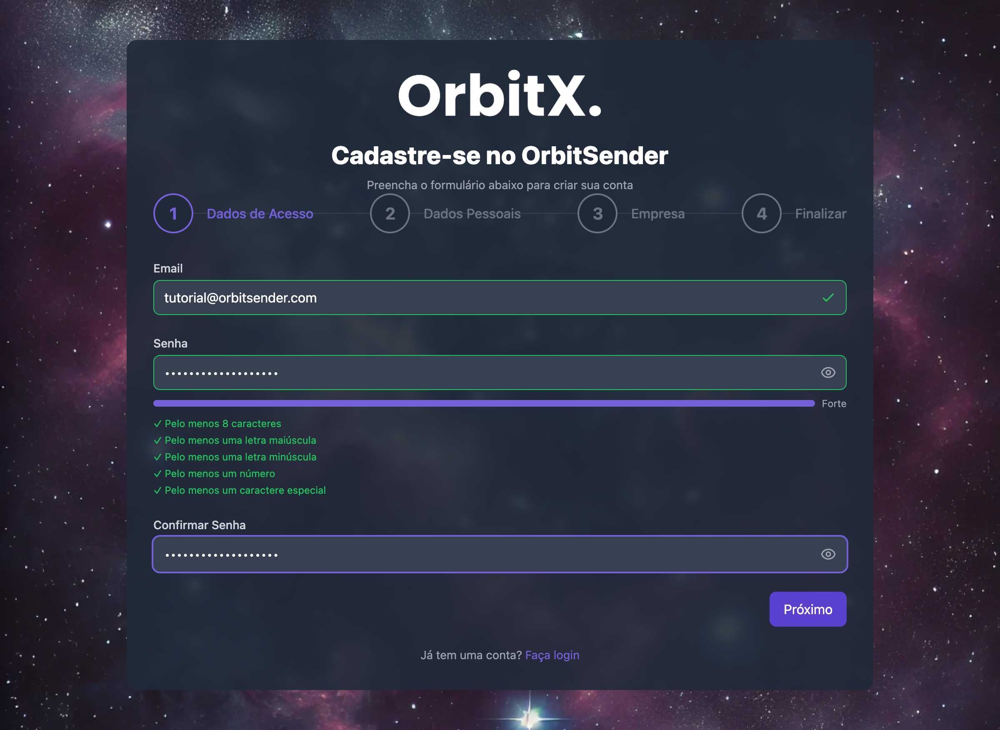
Quando sua senha atender todos os requisitos, você verá um indicador verde mostrando "Forte" e uma lista de validações confirmadas (✓). O botão "Próximo" será habilitado automaticamente.
3.4 Prosseguir para próxima etapa
Após preencher todos os campos e verificar que o botão "Próximo" está habilitado, clique nele para seguir para a Etapa 2.
Passo 4: Etapa 2 - Dados Pessoais
Na segunda etapa, você preencherá suas informações pessoais:
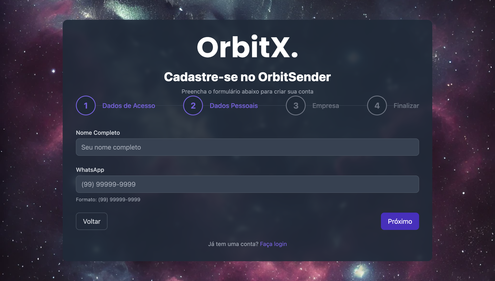
4.1 Nome Completo
- No campo "Nome Completo", digite seu nome completo
- Exemplo:
Usuário Tutorial OrbitSender - Use o mesmo nome que você usa profissionalmente
4.2 Número de WhatsApp
- No campo "WhatsApp", digite seu número de WhatsApp
- O formato deve ser:
(99) 99999-9999 - O sistema formata automaticamente conforme você digita
- Exemplo:
(44) 99826-9363
O número informado aqui é apenas para contato do suporte com você. NÃO será usado para fazer os disparos. Os disparos serão feitos pelos números que você conectar posteriormente na seção de Canais.
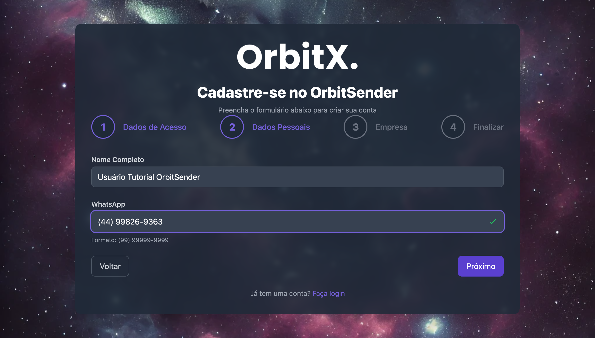
4.3 Prosseguir para próxima etapa
Após preencher os dados pessoais, clique em "Próximo" para seguir para a Etapa 3.
Passo 5: Etapa 3 - Empresa
Na terceira etapa, você preencherá informações sobre sua empresa ou negócio:
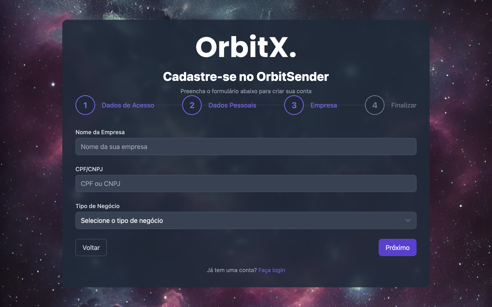
5.1 Nome da Empresa
- No campo "Nome da Empresa", digite o nome da sua empresa ou negócio
- Exemplo:
OrbitSender Tutorial - Se você é pessoa física, pode usar seu nome ou um nome comercial
5.2 CPF/CNPJ
- No campo "CPF/CNPJ", digite seu CPF ou CNPJ
- Você pode digitar com ou sem pontuação (o sistema formata automaticamente)
- O sistema valida se o CPF/CNPJ é válido
O sistema faz validação automática do CPF/CNPJ. Se aparecer a mensagem "CNPJ inválido" ou "CPF inválido", verifique se você digitou corretamente. O campo deve estar formatado automaticamente.
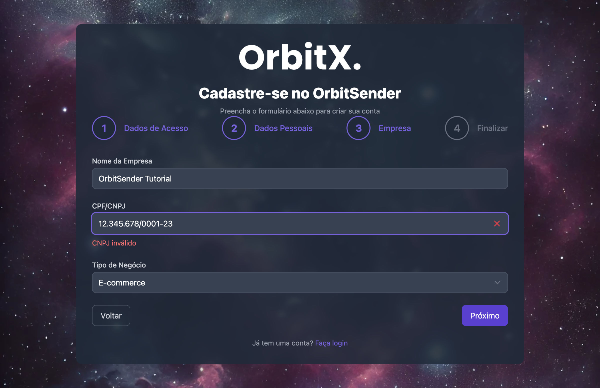
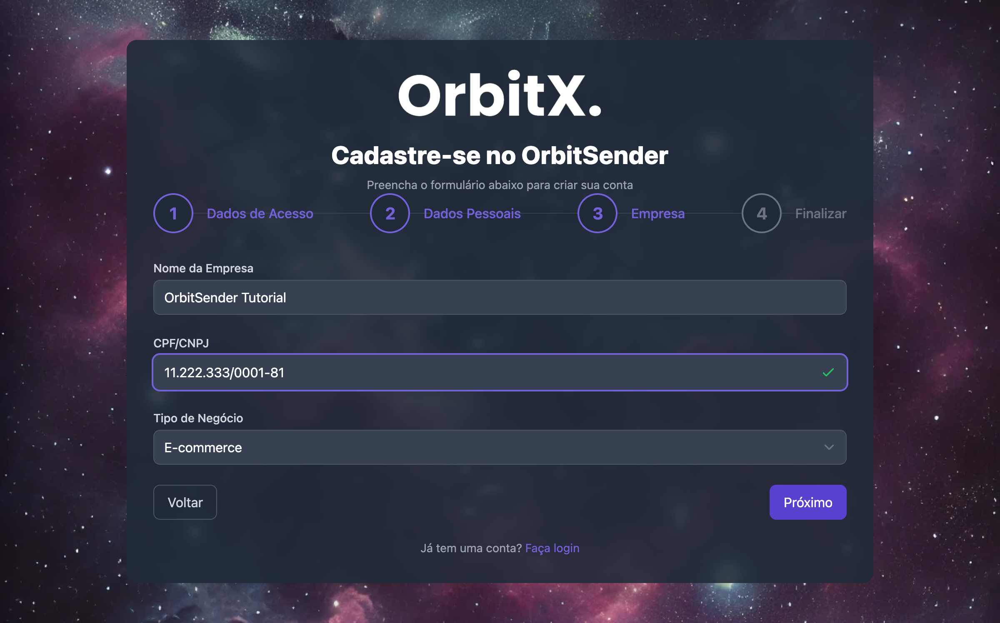
5.3 Tipo de Negócio
- No campo "Tipo de Negócio", selecione a opção que melhor descreve seu negócio
- Opções disponíveis:
- E-commerce
- Varejo
- Prestação de Serviços
- Educação
- Saúde
- Alimentação
- Tecnologia
- Outro
- Selecione a opção mais adequada
5.4 Prosseguir para finalização
Após preencher todos os dados da empresa e validar o CPF/CNPJ, clique em "Próximo" para seguir para a etapa final.
Passo 6: Etapa 4 - Finalizar
Na etapa final, você preencherá algumas informações adicionais e aceitará os termos:
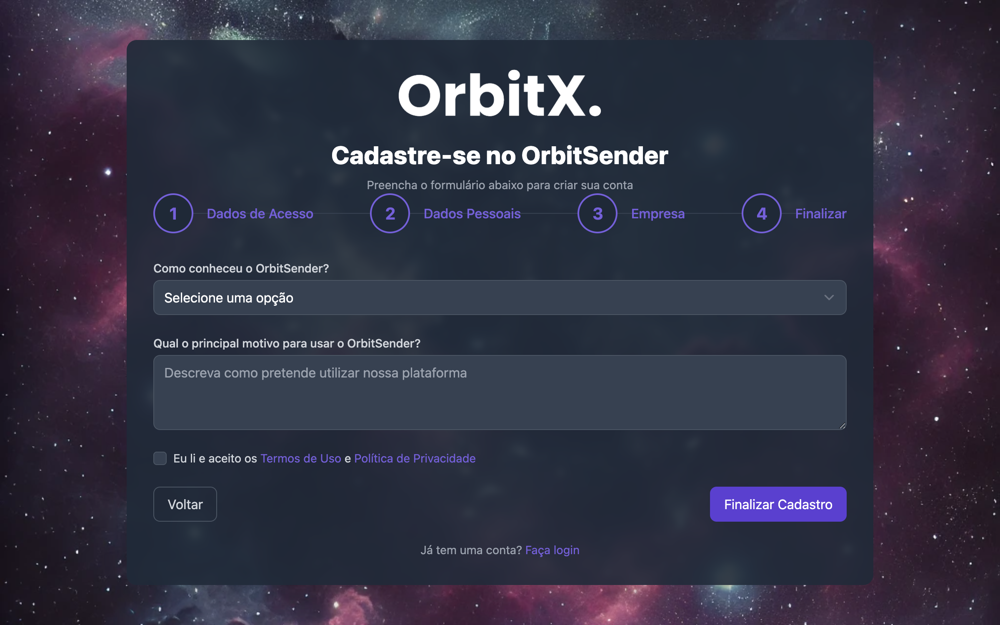
6.1 Como conheceu o OrbitSender?
- No campo "Como conheceu o OrbitSender?", selecione uma opção:
- Opções disponíveis:
- Busca no Google
- Redes Sociais
- Indicação de Amigo
- Anúncio
- Outro
- Selecione a opção que melhor descreve como você conheceu a plataforma
6.2 Motivo para usar o OrbitSender
- No campo "Qual o principal motivo para usar o OrbitSender?", descreva como você pretende utilizar a plataforma
- Exemplo:
Disparar campanhas promocionais para grupos de WhatsApp de forma automatizada e segura. - Seja objetivo e claro sobre seu objetivo
6.3 Aceitar Termos de Uso
- Marque a checkbox "Eu li e aceito os Termos de Uso e Política de Privacidade"
- Leia os termos antes de marcar (você pode clicar nos links para visualizar)
- Este campo é obrigatório para finalizar o cadastro
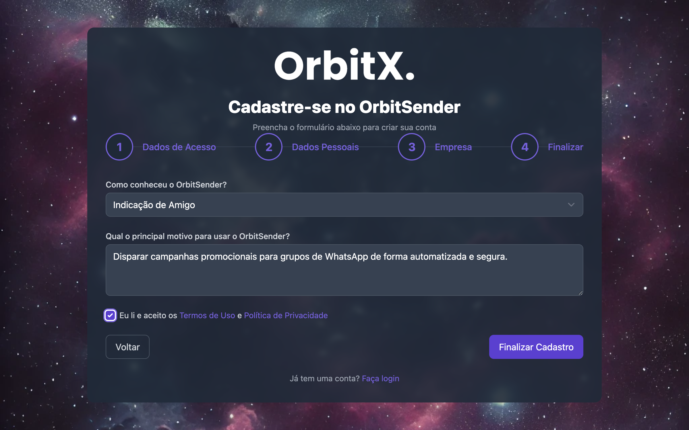
6.4 Finalizar Cadastro
- Revise todas as informações preenchidas
- Certifique-se de que todos os campos estão corretos
- Clique no botão "Finalizar Cadastro"
- Aguarde o processamento
Passo 7: Cadastro Concluído
Após clicar em "Finalizar Cadastro", você verá uma tela de confirmação:
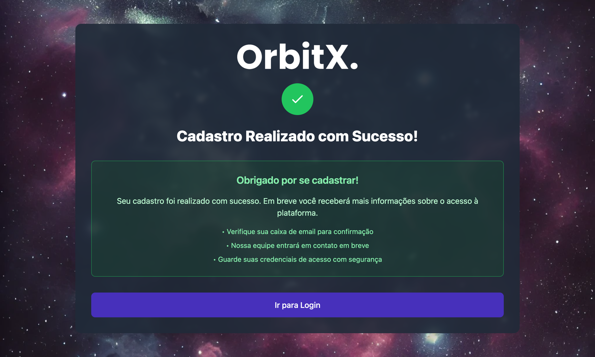
Você verá uma mensagem de confirmação informando que seu cadastro foi realizado com sucesso.
O que fazer agora?
Após o cadastro, você receberá as seguintes instruções:
- ✓ Verifique sua caixa de email para confirmação
- ✓ Guarde suas credenciais de acesso com segurança
- ✓ Nossa equipe entrará em contato em breve
⚠️ IMPORTANTE: Solicitar Liberação da Conta
Devido à fila de espera, após finalizar o cadastro, você precisa entrar em contato com o suporte para solicitar a liberação da sua conta.
📱 Contato do Suporte
Suporte OrbitSender
WhatsApp: (44) 9 9826-9363
Entre em contato pelo WhatsApp informando:
- Seu email cadastrado (
tutorial@orbitsender.comno nosso exemplo) - Seu nome completo
- Que você finalizou o cadastro e precisa da liberação da conta
O que o suporte fará:
- Verificará seu cadastro
- Liberará o acesso à sua conta
- Te avisará quando a conta estiver liberada
- Poderá fornecer orientações adicionais se necessário
Tenha em mãos seu email e senha quando entrar em contato com o suporte. Eles podem precisar dessas informações para confirmar sua identidade.
Passo 8: Fazer Login
Após o suporte liberar sua conta, você poderá fazer login:
- Acesse a página de login:
- URL direta:
https://app.orbitsender.com/login - Ou clique em "Ir para Login" na tela de confirmação
- URL direta:
- Insira suas credenciais:
- Email: O mesmo email usado no cadastro
- Senha: A senha que você criou
- Clique em "Entrar"
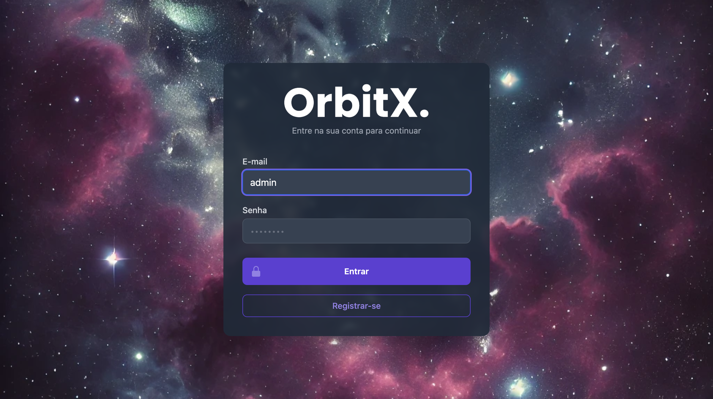
- Certifique-se de que sua conta foi liberada pelo suporte
- Verifique se o email e senha estão corretos
- Se ainda não conseguir, entre em contato novamente com o suporte
Passo 9: Primeira vez no sistema
Após fazer login pela primeira vez, você verá o Dashboard:
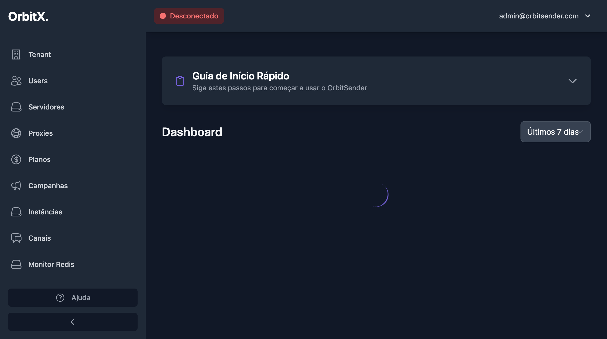
📋 Checklist inicial:
- ✅ Explore o menu lateral para se familiarizar com as seções
- ✅ Verifique se consegue acessar todas as seções do menu
- ✅ Acesse a seção "Canais" para preparar a conexão do WhatsApp:
https://app.orbitsender.com/channels(veja Conexão de Canais) - ✅ Acesse "Configurações" para entender as opções disponíveis:
https://app.orbitsender.com/settings(veja Configurações) - ✅ Explore a interface para se familiarizar
Recomendamos usar o sistema pelo computador na primeira vez, pois facilita a visualização e configuração. Após se familiarizar, você pode usar pelo celular se preferir.
Resumo do Processo Completo
Acessar registro
Acesse https://app.orbitsender.com/register
Entrar na fila
Clique em "Entrar na Fila de Espera"
Dados de acesso
Preencha email e senha (atenda todos os requisitos)
Dados pessoais
Preencha nome completo e WhatsApp
Dados da empresa
Preencha nome da empresa, CPF/CNPJ e tipo de negócio
Finalizar
Responda as perguntas e aceite os termos
Contatar suporte
WhatsApp: (44) 9 9826-9363
Solicitar liberação da conta
Fazer login
Após liberação, faça login com email e senha
Informações Importantes
ℹ️ Credenciais de Acesso
- Email: Use o mesmo email cadastrado
- Senha: A senha que você criou (não a perdemos)
- Guarde suas credenciais em local seguro
- Não compartilhe sua senha com ninguém
⚠️ Sobre a Fila de Espera
- É necessário entrar em contato com o suporte
- O suporte libera contas em ordem de solicitação
- Você receberá confirmação quando a conta for liberada
- Mantenha suas credenciais seguras enquanto aguarda
✅ Próximos Passos
- Entre em contato com o suporte pelo WhatsApp
- Aguarde a liberação da conta
- Faça login após ser liberado
- Siga os próximos tutoriais para configurar
Próximos tutoriais
Agora que você aprendeu a criar a conta, siga para os próximos tutoriais: